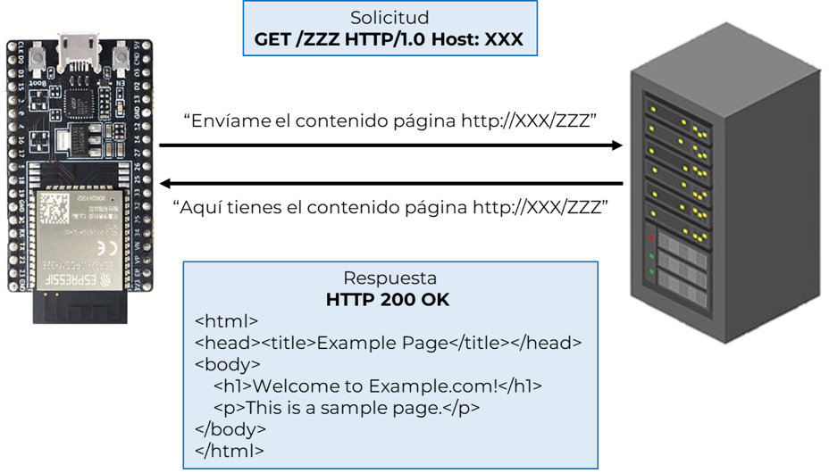

Principios de comunicación cliente-servidor en IoT
Introducción a las páginas web y el comando GET:
Para comprender este ejercicio, es importante saber que toda página web tiene un código fuente que define su contenido. Este código es accesible a través de peticiones realizadas por el navegador al servidor que aloja la página. En este ejercicio, el ESP32 actuará como un cliente que envía una petición GET a un servidor para obtener el contenido de una página web específica. El comando GET es uno de los métodos más comunes del protocolo HTTP, utilizado para solicitar datos de un servidor.
Cuando un navegador accede a una página web, recibe el código fuente que define su contenido. En este ejercicio, el ESP32 actuará como cliente y recibirá este código, que luego será mostrado en consola. Un ejemplo de código HTML que podría recibirse es el siguiente:
<!DOCTYPE html> <html> <head><title>Example Page</title></head> <body> <h1>Welcome to Example.com!</h1> <p>This is a sample page.</p> </body> </html>
Este código define una página con un título, un encabezado principal y un párrafo. En la consola del ESP32, veremos este contenido en formato de texto plano.
El siguiente diagrama ilustra el flujo de datos en este ejercicio. El ESP32 actúa como cliente, enviando una solicitud GET al servidor. El servidor responde con el contenido de la página web, que el ESP32 muestra en su consola.

Este flujo representa la interacción típica en la comunicación cliente-servidor en IoT, donde los dispositivos recopilan información de servidores remotos para procesarla localmente o presentarla al usuario.
Sockets y su papel en la conexión cliente-servidor:
Los sockets son un componente esencial en la comunicación entre dispositivos en una red. En el contexto de IoT y en este ejercicio en particular, el socket actúa como un punto de comunicación entre el ESP32 (cliente) y el servidor web. El socket permite al ESP32 enviar y recibir datos utilizando protocolos de red, como HTTP, que es el protocolo que estamos empleando para realizar la solicitud GET.
Un socket se puede imaginar como una "tubería" a través de la cual los datos fluyen entre el cliente y el servidor. El ESP32 utiliza un socket para:
- Conectarse al servidor web: Especifica la dirección IP del servidor y el puerto que se usará para la comunicación (en este caso, el puerto 80, que es el estándar para HTTP).
- Enviar solicitudes: El ESP32 envía una solicitud GET a través del socket, indicando al servidor qué recurso desea obtener.
- Recibir respuestas: El servidor utiliza el mismo socket para enviar de vuelta el contenido solicitado, como el código HTML de la página web.
Socket con ESP32:
Siguiendo el tutorial oficial de módulo socket, para crear un servidor web se necesita crear un socket que escuche las solicitudes de clientes que requieran entablar comunicación. Para redes de servidores TCP se sigue una serie de pasos para crear el socket, el cual se muestra en el siguiente diagrama de flujo:
- Se crea el objeto socket.socket(af=AF_INET, type=SOCK_STREAM, proto=IPPROTO_TCP, /) con una configuración TCP
- Se llama la función socket.bind(address) para vincular el socket a una dirección
- Se llama la función socket.listen([backlog]) para habilitar al servidor web para aceptar conexiones y delimita un máximo número de conexiones
- Se llama la función socket.accept() para aceptar una solicitud de conexión entrante de un cliente. El cual retorna un nuevo objeto socket, usado para enviar y recibir datos, y la dirección vinculada al socket
- Se llama las funciones socket.send() y socket.recv() para enviar y recibir datos al cliente, respectivamente.
- Se llama la función socket.close() para marcar el socket como cerrado y liberar todos los recursos
Para más información de las diferentes funciones disponibles en la clase socket véase la documentación oficial.